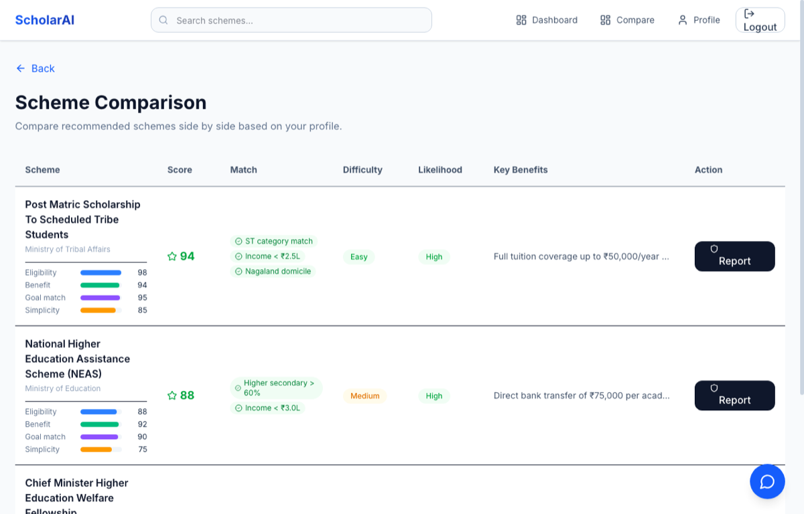

ScholarAI: Large-Scale Government Scheme Ingestion & Vector Retrieval
India hosts hundreds of welfare and educational support programs across central ministries and state departments, yet navigating eligibility criteria remains a barrier for millions of students. Built for the USAII Global AI Hackathon 2026 (6,081+ participants worldwide, 5-person team), ScholarAI is an AI-powered discovery platform. As the team’sData Engineer, I engineered the complete data pipeline: scraping and regex-normalizing 1,008 heterogeneous scheme records, generating 384-dimensional dense semantic embeddings, and architecting the PostgreSQL + pgvector storage foundation that powers downstream hybrid search and agentic reasoning.
Application Interfaces
Frontend Powered by Vector & Relational StoreDiscovery Dashboard
Personalized scheme recommendations ranked by hybrid semantic similarity and rule-based profile matching.

Multi-Factor Scheme Comparison
Side-by-side comparison displaying eligibility scores, benefit metrics, matched criteria badges, and difficulty assessments.
1. The Problem: Unstructured Government Scheme Portals
Government welfare and scholarship programs in India are published across dozens of federal and state portals. While vast financial aid is allocated each fiscal year, citizen discovery suffers from critical data engineering bottlenecks:
- Highly Heterogeneous Text: Public portals contain no unified schema. One scheme lists document requirements as clean bullet points, another as an unformatted run-on paragraph, and another as camelCase-concatenated text strings without punctuation or delimiters.
- Multi-Tiered Eligibility Rules: Criteria involve strict numerical thresholds (e.g., family annual income ≤ ₹2.5 Lakh), categorical constraints (Scheduled Tribe, OBC, General, PwD), geographic jurisdiction (State domicile vs. Central eligibility), and academic status (enrolled in recognized post-matric course).
- Pure Keyword Search Fails: A student searching for “tuition fee waiver for engineering” will miss “Post Matric Financial Assistance to ST Scholars” under simple keyword matching, because official scheme titles rarely match colloquial student queries.
2. Data Pipeline Architecture
To power reliable retrieval and deterministic rule verification, I built a multi-stage data engineering pipeline that transforms raw public portal dumps into queryable relational and vector records:
┌────────────────────────────────────────────────────────────────────────┐
│ Raw Public Scheme Data │
│ • Web scraper extraction across central and state welfare portals │
│ • 1,008 raw JSON files in data-engineering/scraped_schemes/ │
└───────────────────────────────────┬────────────────────────────────────┘
│
│ Regex Pattern Normalization
│ (batch_normalizer.py)
▼
┌────────────────────────────────────────────────────────────────────────┐
│ Text Normalization & Parsing │
│ • CamelCase boundary splitting: re.sub(r'(?<=[a-z])(?=[A-Z])', '|') │
│ • Process workflow extraction: re.findall(r'Step \d+:.*?', re.DOTALL) │
│ • Relational schema mapping: metadata, rules, benefits, and FAQs │
└───────────────────────────────────┬────────────────────────────────────┘
│
│ Dense Semantic Vector Generation
│ (generate_embeddings.py)
▼
┌────────────────────────────────────────────────────────────────────────┐
│ Semantic Embedding Generation │
│ • Model: thenlper/gte-small (384-dimensional dense vectors) │
│ • Composite text: scheme name + overview + eligibility + benefits │
│ • Vectorized batch encoding (batch_size = 32) via SentenceTransformer │
└───────────────────────────────────┬────────────────────────────────────┘
│
│ Batched Supabase Ingestion
│ (bulk_insert.py, batch_size = 50)
▼
┌────────────────────────────────────────────────────────────────────────┐
│ PostgreSQL + pgvector Database │
│ │
│ ┌───────────────────────┐ ┌───────────────────────────────────────┐ │
│ │ Relational Schema │ │ Vector Index │ │
│ │ • schemes table │ │ • pgvector (384-dim, cosine <=>) │ │
│ │ • rules (income caps)│ │ • tsvector (full-text search) │ │
│ │ • faqs table │ │ • pg_trgm (fuzzy scheme name match) │ │
│ └───────────────────────┘ └───────────────────────────────────────┘ │
└───────────────────────────────────┬────────────────────────────────────┘
│
│ Hybrid Query Execution (Vector + Keyword)
▼
┌────────────────────────────────────────────────────────────────────────┐
│ Downstream Platform (Team-Engineered Services) │
│ • LangGraph 11-Node Agent Pipeline & Local Qwen2.5:3B LLM │
│ • Deterministic Eligibility Gates & Multi-Factor Comparison Engine │
│ • React 19 Citizen Discovery Dashboard & What-If Simulator │
└────────────────────────────────────────────────────────────────────────┘3. Robust Regex-Based Normalization
A major engineering hurdle in batch_normalizer.py was repairing unstructured text scraped from government web forms. Two parsing techniques proved essential:
CamelCase Document Splitting
Scraped document lists frequently lacked whitespace or commas (e.g. AadhaarCardIncomeCertificateHostelCertificate). A regex lookaround pattern detected lowercase-to-uppercase character transitions:
Splitting by delimiter transformed run-on blocks into structured arrays of required certificates.
Workflow Step Extraction
Application workflows were buried within dense paragraphs. A non-greedy regular expression parsed sequential steps:
Cleaned steps were isolated into actionable, ordered instructions for citizen guidance.
The batch pipeline processed all 1,008 raw files, validated required fields (rejecting corrupt or empty entries), and exported clean, schema-compliant JSON ready for database ingestion and vectorization.
4. Semantic Vector Embeddings (gte-small)
To allow natural language retrieval against administrative scheme descriptions, I integratedthenlper/gte-small via SentenceTransformers. GTE-small generates 384-dimensional dense vectors, providing an optimal balance of semantic clustering quality and lightweight memory footprint for local and cloud PostgreSQL deployment.
Rather than embedding scheme titles alone, generate_embeddings.py constructed a composite text block:
Encoding was executed in batches of 32 (batch_size = 32), generating dense vectors for all 1,008 schemes in minutes. Vectors were serialized directly alongside relational records for atomic loading.
5. PostgreSQL & pgvector Database Architecture
The persistence layer was designed around PostgreSQL with the pgvector extension:
- Relational Models: SQLAlchemy models partitioned data across
schemes(authoritative title, benefits, ministry, URL),rules(structured income upper-bounds, category constraints, student requirements), andfaqs(official government question-and-answer pairs). - Hybrid Search Indexing: Queries execute across three complementary indices: pgvector cosine distance (
<=>) for semantic similarity, PostgreSQLtsvectorfor full-text keyword matching, andpg_trgmfor typo-tolerant trigram search on scheme titles. - Batched Ingestion Pipeline: To avoid network timeouts when populating Supabase,
bulk_insert.pystreams records in batches of 50, verifying foreign key constraints and vector dimensionality before committing each transaction.
6. Downstream System Architecture (Team Contributions)
With the clean data foundation in place, my teammates built the surrounding application services:
LangGraph 11-Node Pipeline
StateGraph orchestrating intent extraction, question planning, eligibility filtering, vector retrieval, and verification.
Local LLM Reasoning
Qwen2.5:3B running via GGUF for private, on-device eligibility verification, decision reports, and side-by-side comparison scoring.
3-Tier Caching
Memory → Redis → PostgreSQL multi-layer caching reducing redundant LLM inferences and vector queries.
React 19 Frontend
Vite + Tailwind CSS interface featuring citizen onboarding, interactive comparison matrices, and What-If profile simulations.
7. Engineering Tradeoffs & Lessons
Deterministic Rules vs. Pure LLM Filtering
Early design discussions considered passing all 1,000+ schemes directly to an LLM for eligibility determination. This was rejected due to latency, token costs, and hallucination risks. Instead, the architecture enforces a strict two-stage gate: the relational database first filters out impossible candidates using deterministic numerical constraints (income_max, category, state domicile). Filtering deterministic eligibility constraints before LLM reasoning substantially reduces the candidate set passed to the model, invoking LLM inference only on top candidates for nuanced qualitative evaluation.
Pre-Computed Embeddings vs. Dynamic Ingestion
Because government scheme details change infrequently (primarily during annual budget cycles), pre-computing embeddings offline during data ingestion proved far superior to dynamic runtime embedding generation. The backend queries the pgvector index directly with the user query vector in milliseconds without incurring per-scheme embedding latency.
8. Hackathon Verification & Results
ScholarAI was developed for the USAII Global AI Hackathon 2026, competing against 6,081+ participants worldwide across multi-disciplinary software engineering and AI tracks. The project was selected as a Finalist based on its working hybrid retrieval system, accurate eligibility matching, and end-to-end user experience across 1,008 live schemes.
9. Source Code & Team Repository
ScholarAI is open source under the MIT License. The team repository includes the data engineering scripts, FastAPI backend, LangGraph state graph implementations, and React 19 frontend application.